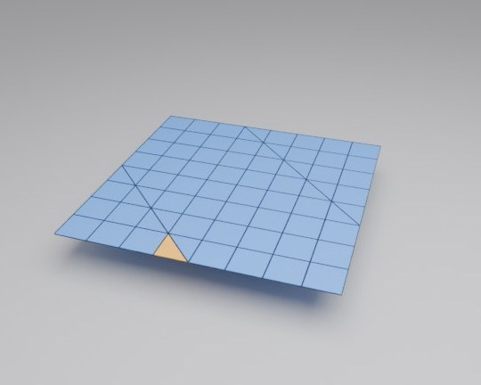
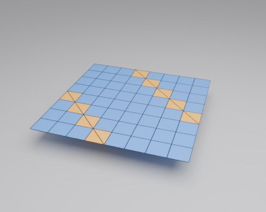

Bonus lesson
Select Similar
Select Similar grows your selection to include everything that shares a property with what you already selected. It works in Edit Mode. Find it under Select › Similar, or press Shift-G.


The options depend on the select mode
The manual says the choices change with your selection mode. Here are a few from each.
- Vertex mode: Normal, Amount of Adjacent Faces, Vertex Groups, Amount of Connecting Edges.
- Edge mode: Length, Direction, Amount of Faces Around an Edge, Face Angles, Crease, Bevel, Seam, Sharpness.
- Face mode: Material, Area, Polygon Sides, Perimeter, Normal, Co-planar, Flat/Smooth, Freestyle Face Marks.
Polygon Sides, used in the picture, selects all faces that have the same number of edges as the selected ones.
Compare and Threshold
For properties that are numbers, two more options appear. Compare chooses how values are compared: Equal, Greater or Less than the value of the active item. Threshold controls how close the values have to be.
The manual also lists Face Regions under Select › Similar. It selects matching features on a mesh that has several similar areas, based on the topology.
Read the manual page on Select Similar.
Try it
This exercise is our own suggestion and has not been run step by step in the GUI. Add a plane, enter Edit Mode and subdivide it a few times. Switch to Face select mode, select a few faces and triangulate them from the Face menu. Click one triangle, then press Shift-G and choose Polygon Sides. Try Area or Normal as well, and change Compare and Threshold in the Adjust Last Operation panel. Use Ctrl+Z to undo.